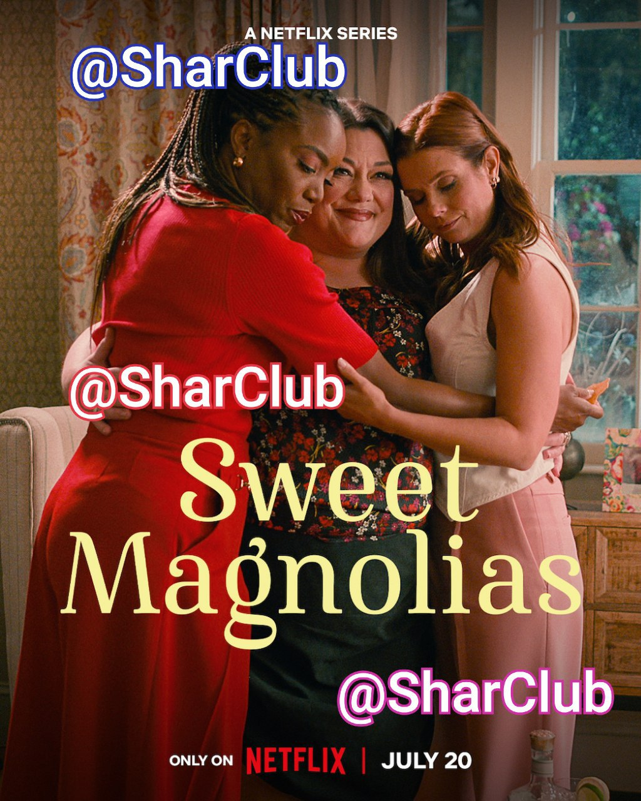

Mercredi le phénomène culte revient bientot!
Il semblerait que la plateforme de streaming au N rouge ait programmé une deuxième saison pour la série Mercredi pour le plus grand bonheur des internautes.
Lire la suiteIl semblerait que la plateforme de streaming au N rouge ait programmé une deuxième saison pour la série Mercredi pour le plus grand bonheur des internautes.
Lire la suite
la série feel good
Lire la suite
Hier sur le quartier Peaky Blinders
Sophie Rundle a révélé une bonne nouvelle sur son compte Instagram en postant deux jolies photos : elle a donné naissance à son deuxième enfant, un petit garçon. Il rejoint donc son grand frère né en...
Lire la suiteHier sur le quartier Vikings
Lire la suite